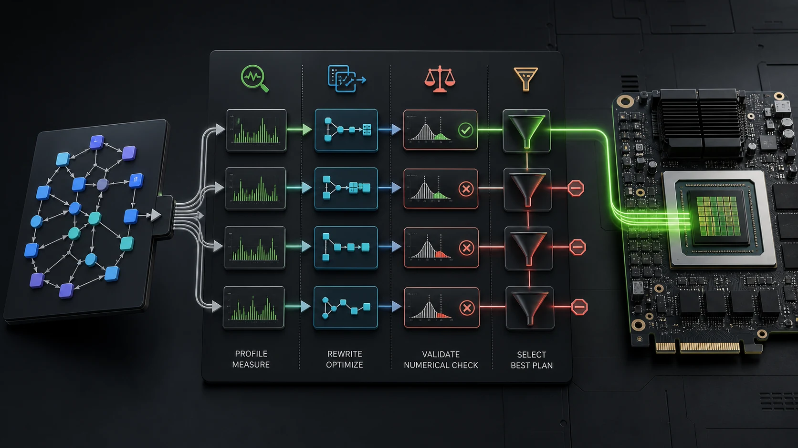

Version 2 release candidate
Custom-DL-Optimizer
Measure every plan. Keep the fastest valid one.
An auditable PyTorch inference plan selector for built-in FX and Inductor paths, external compiler providers, and agent-driven optimization workflows.
pip install custom-dl-optimizer
The deployment problem
A faster graph on paper can still lose in your process.
What the package does
One workload enters. Several plans compete.
The host supplies a real model and representative tensors. Each eligible plan is built in isolation, checked against eager FP32, timed, and retained only when it clears the configured threshold.

Live selection trace
The raw winner is not always the deployable winner.
In this illustrative trace, an external backend is fastest but fails parity. The valid compiler plan wins; native remains available as the exit path.
Version 2 API
A callable result with the evidence attached.
The selected module and its report travel together. Save the evidence beside your deployment artifact, then inspect exactly why the plan won.
from custom_dl_optimizer import (
OptimizationConfig,
Optimizer,
)
optimizer = Optimizer(
device="cuda",
config=OptimizationConfig(
enable_compile=True,
min_speedup=1.02,
),
)
result = optimizer.optimize(model, sample)
output = result(sample)
print(result.selected_plan)
result.save_report("optimization.json")Bring your strongest baseline
Compare built-ins, vendor compilers, and research backends under one policy.
Providers return a callable module. Custom-DL handles isolation, first-call setup timing, parity, steady-state measurement, relative speedup, and fallback.
Agent-safe by construction
Let an agent optimize approved workloads, not arbitrary code.
The host registers live modules and tensors in process. The agent sees only names and four bounded operations; no weights, paths, shell commands, downloads, or Python expressions cross the tool boundary.
Open the agent guideHonest evidence
A regression is a result, not an inconvenience.
The historical T4 study shows why selection needs a native fallback. Most gains came from established precision, layout, and compiler techniques; the fixed custom path lost on MobileNet-V2.
| Model | Eager FP32 | Inductor | Experimental | vs eager | vs Inductor |
|---|---|---|---|---|---|
| ResNet-50 | 366.997 ms | 99.254 ms | 89.307 ms | 4.11x | 1.11x |
| MobileNet-V2 | 112.703 ms | 54.312 ms | 64.372 ms | 1.75x | 0.84x |
| VGG-16 | 639.399 ms | 273.326 ms | 273.402 ms | 2.34x | 1.00x |
| EfficientNet-B0 | 146.788 ms | 70.784 ms | 66.409 ms | 2.21x | 1.07x |
| DenseNet-121 | 360.750 ms | 194.997 ms | 193.169 ms | 1.87x | 1.01x |
Historical hardware snapshot, not a v2 benchmark and not a state-of-the-art claim. Rerun the notebook before citing results.
Start with the contract
Documentation that resolves on this site.
Custom-DL-Optimizer v2